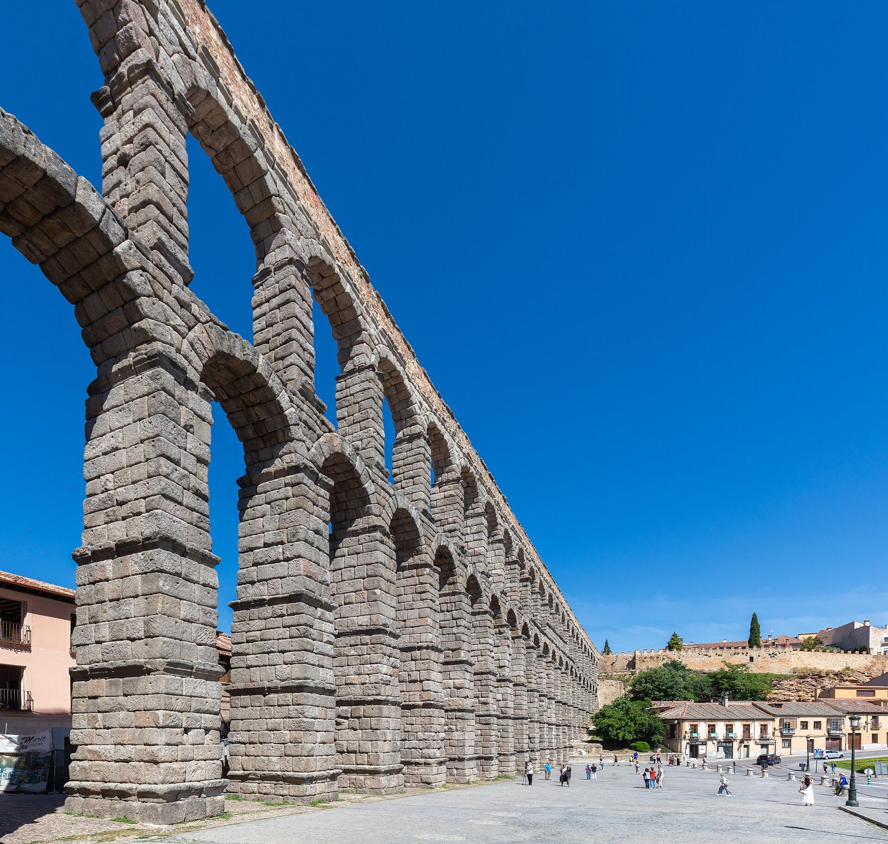

I
13:00
Salida de Madrid
Quien reserva primero conduce y decide el punto de recogida. Hora y media de charla hasta ver el acueducto.

Otoño 2026 · Doce viernes · Un coche
El Sheriff da clase en Segovia todos los viernes de 16:20 a 20:00. Tú pones el coche, Segovia pone la mesa, y la vuelta la hacemos con la digestión hecha y el Alcázar iluminado.
Simple como un judión: salimos de Madrid a la hora de comer, comemos como romanos, el Sheriff cumple con su deber docente y volvemos de noche con las luces del Alcázar de despedida.
Quien reserva primero conduce y decide el punto de recogida. Hora y media de charla hasta ver el acueducto.
Cochinillo, cordero, judiones o lo que hayáis elegido en el mapa. Sin prisa, pero con hora de salida.
Vosotros a vuestro aire: siesta, paseo por la judería, un café en la Plaza Mayor o una visita al Alcázar.
Reencuentro en el campus, paseo por la muralla al anochecer y, si el cuerpo lo pide, una caña de despedida.
Con la digestión hecha y las luces de Segovia por el retrovisor. En casa antes de las once.
«En Segovia se come despacio porque la ciudad te está esperando fuera.» Dicho popular inventado por el Sheriff, pero cierto.
Del 18 de septiembre al 4 de diciembre. Cada viernes cabe un coche: el primero que se apunta conduce y elige restaurante, y pueden sumarse dos más. Sube una foto al reservar para que los siguientes sepan con quién van.
Restaurantes a tiro de paseo del campus de IE en Santa Cruz la Real. Filtra por lo que te apetezca y mira cuántos minutos andando hay hasta la clase: así el Sheriff llega puntual.
«Volver a Madrid de noche, después de comer en Segovia, es la única forma decente de terminar una semana.» El Sheriff, con la mano en el pecho.